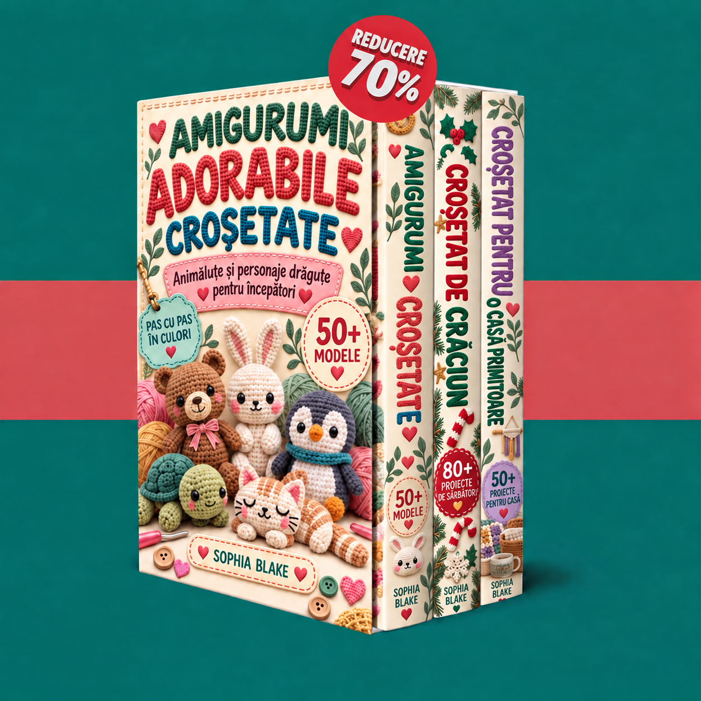

Bine ai venit în colecția ta. Descoperă cele trei cărți și începe cu animăluțe, decorațiuni de Crăciun sau proiecte confortabile pentru casă.

Se încarcă volumele…
Activează JavaScript pentru a folosi zona de membri. Poți deschide PDF-urile și prin linkurile de mai jos.